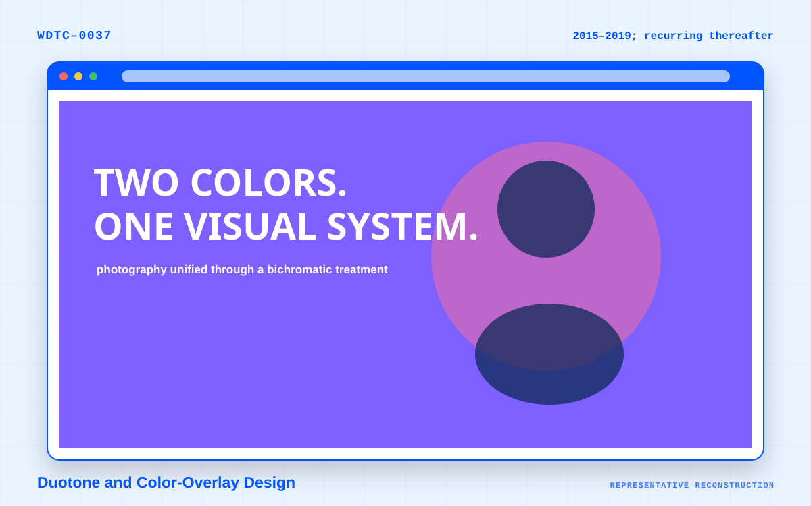

Definition
What is Full-Screen Photography?
Faster connections and larger displays enabled imagery to dominate the opening viewport. Travel, hospitality, architecture, fashion, and luxury brands adopted this approach extensively.
Visual recognition
Typical elements
Use these recurring characteristics as recognition clues rather than a checklist that every example must satisfy.
- Edge-to-edge hero photographs
- Minimal text over imagery
- Transparent or overlaid navigation
- Full-screen slideshows
- Large editorial typography
- Dark overlays to preserve readability
- Strong art direction
- Reduced visible interface chrome
- Emotional or aspirational branding
Terminology
Common names
The source inventory associates this movement with the following labels. Usage can vary across communities and periods.
Catalog description
How the style fits the wider history
Faster connections and larger displays enabled imagery to dominate the opening viewport.
Travel, hospitality, architecture, fashion, and luxury brands adopted this approach extensively.
Date and classification note: The period above indicates the trend’s main popularity rather than a strict beginning or ending. Family membership is an editorial navigation aid derived from the source’s umbrella categories.
Visual study
Representative specimen details
These original catalog illustrations isolate recognizable layout, color, typography, and interface cues without claiming to reproduce a specific historical website.
Continue exploring
Related and contrasting trends
 Representative reconstruction
Representative reconstruction
Video Background Design
Short looping video replaced static hero images on many promotional sites.
 Representative reconstruction
Representative reconstruction
Magazine and Editorial Grid Design
Publishers borrowed heavily from print editorial design.
 Representative reconstruction
Representative reconstruction
Immersive Product Storytelling
High-end product pages increasingly behave like directed visual narratives.

Representative reconstructionDuotone and Color-Overlay Design
Photographs were recolored using two contrasting hues or covered by strong translucent color fields.
Sources and citation
Reference notes
The title, popularity range, common names, description, and typical elements on this page are derived from the project owner’s source inventory, Website Design Trends History. The catalog’s family assignment, related-trend links, page structure, and representative illustrations are editorial additions created for navigation and teaching.
Open the supplied source inventory (PDF).
Suggested citation:
Web Design Trend Catalog. “Full-Screen Photography.” Web Design Trend Catalog, 23 July 2026, https://webdesigntrendcatalog.com/trends/full-screen-photography.html.